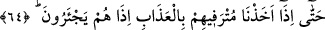

amelleri olduğu gibi onda yazılmıştır. Onda gerçeğe uymayan bir şey bulunmaz. Yâni
dinleyen kimseye konuşmanın hakkı açıkladığı ve ortaya koyduğu gibi bu kitap kendisine
bakan kimseye hakkı âşikâr kılar ve açıklar. İşte orada onların amelleri zâhir olur ve
onlara gerekli karşılıkları verilir. Hayır ise hayır, şer ise şer. Katımızda herkesin
amellerinin yazılı olduğu defter vardır. O defter doğru söyler ve herkesin yaptıklarına
şâhidlik eder.
“Ve onlar” sevabları eksiltilerek ve azabları artırılarak kendilerine verilecek
karşılıkta “asla haksızlığa uğratılmazlar.” Aksine mükellef tutuldukları amelleri ve
amel defterlerinin hak olarak söylediği kadar karşılık görürler.
63. Hayır, onların (o inkârcıların) kalpleri bu hususta cehâlet içindedir. Ayrıca
onların bundan (bu şirk ve inkârcılıklarından) öte birtakım (kötü) işleri vardır ki,
onlar bu işleri yapar dururlar.
“Hayır, onların” o inkârcıların “kalpleri bu hususta” Kur’an’da açıklanan Allah’ın
nezdinde hakkı söyleyen bir kitap olduğu, herkesin gözü önünde kötü amellerini ortaya
dökeceği ve ona göre karşılık görecekleri hususunda “cehâlet” kendilerini kaplayan bir
gaflet “içindedir. Ayrıca onların bundan öte” zikredilenlerden kalplerinin büyük bir
gaflette olmasından başka “birtakım (kötü) işleri” birçok pis amelleri “vardır.” Bu
ameller onların türlü küfürleri ve mâsıyetleridir. Aşağıda söz konusu edilecek olan
Kur’an’a dil uzatmaları da bunlara dâhildir “ki, onlar bu işleri yapar dururlar.” Onları
yapmayı alışkanlık haline getirmişlerdir.
64. En nihayet, refah ve bolluk içinde olanlarını sıkıntıya (veya azaba)
uğrattığımızda, bakarsın ki onlar feryadı basarlar.
“En nihayet,” zikredilen amellerinin sonucu ve ardından geleceklerin başlangıcı
olarak “refah ve bolluk içinde olanlarını sıkıntıya (veya azaba) uğrattığımızda,” yâni
biz onların nimet içinde yüzenlerini ve önde gelenlerini azab ile yakalayana kadar bu
amelleri yapmaya devam ederler. “Bakarsın ki onlar” refah ve bolluk içinde olanlar
“feryâdı basarlar.” Ânîden yardım talebiyle bağırırlar, seslerini yükseltirler ve
kurtuluş için yalvarıp yakarırlar. Çünkü “
”ın asıl anlamı, yalvararak sesi
yükseltmektir. “
” Kişi yakararak Allah’a duâ etti, demektir.